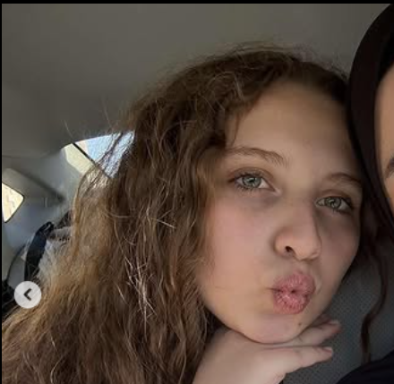

Cedra's Corner
The Bright Bloom — where joy, sunshine, and a little bit of ambition live.
El Sol y La Playa
Your spirit is powered by the thrill of adventure and the calming sound of the waves. While Paris, Switzerland, and Italy hold your heart, nothing quite beats the energy of Spain!
This is where your energetic, joyful spirit meets the sun—on the beach.
This card represents all your favorite places: Spain, Switzerland, Italy, and France.
The Spirit Animals
Fierce like a Bear, mysterious like a Cat, and steady like a Turtle—you're the perfect combination of all three! A true force of nature.
The Secret Language & Codes
😊
Draws a Smile
It's not just *one* thing you say, it's literally everything. Thank you for the endless joy!
🗣️
Code Word: Thedra
The best mispronunciation of a name, making it our own private joke. If you know, you know!
🔢
Magic Number: 156
The universe's secret sign that something amazing is about to happen. (lololol)
The Unseen Blueprint
🌼
A sunflower is almost perfect, but you are a daisy—simple, resilient, and radiating light.
"maybe in another life🥀"
This is dedicated to the dream of engineering—a reminder that you possess an unstoppable mind, capable of designing and building the most amazing friend and future. Your intelligence and ambition are immeasurable.
P.S. (Regarding your height): A tiny frame holds the biggest heart and the fiercest energy!
Cedra's Soundtrack
Every amazing person needs a theme song. Press play to feel the vibe.